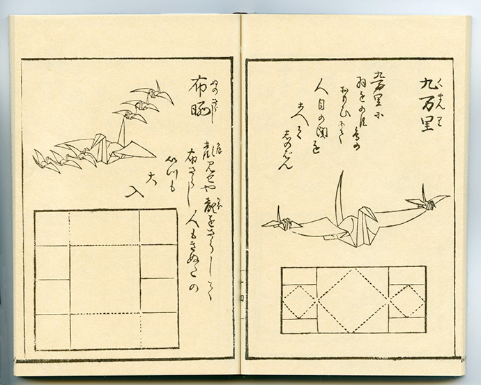
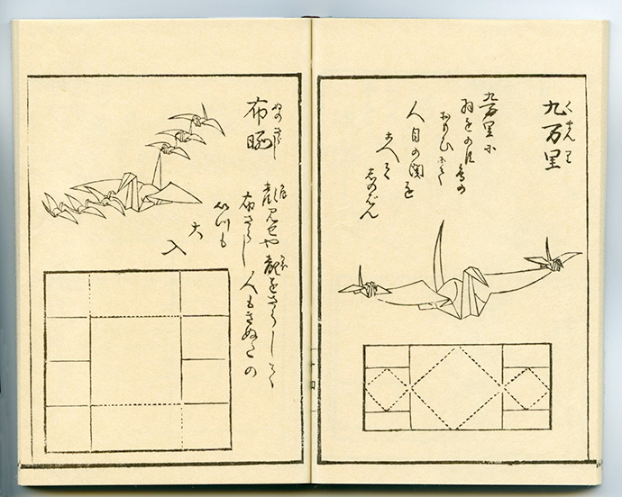

What is origami?
The Japanese word origami itself is a compound of two smaller Japanese words: "ori", meaning to fold, and "kami", meaning paper. Until recently, not all forms of paper folding were grouped under the word origami. Before that, paper folding for play was known by a variety of names, including "orikata" or "origata", "orisue", "orimono", "tatamigami" and others.
History of Japanese origami
By the 7th century, paper had been introduced to Japan from China
via the Korean Peninsula, and the Japanese developed washi by
improving the method of making paper in the Heian period. The
paper making technique developed in Japan around 805 to 809 was
called nagashi-suki, a method of adding mucilage to the process of
the conventional technique to form a stronger layer of paper
fibers. With the development of Japanese paper making technology
and the widespread use of paper, folded paper began to be used for
decorations and tools for religious ceremonies such as gohei,
ōnusa and shide at Shinto shrines. Religious decorations made of
paper and the way gifts were wrapped in folded paper gradually
became stylized and established as ceremonial origami. During the
Heian period, the Imperial court established a code of etiquette
for wrapping money and goods used in ceremonies with folded paper,
and a code of etiquette for wrapping gifts.
In the Muromachi period from the 1300s to the 1400s, various forms
of decorum were developed by the Ogasawara clan and Ise clans,
completing the prototype of Japanese folded-paper decorum that
continues to this day. The Ise clan presided over the decorum of
the inside of the palace of the Ashikaga Shogunate, and in
particular, Ise Sadachika during the reign of the eighth Shogun,
Ashikaga Yoshimasa , greatly influenced the development of the
decorum of the daimyo and samurai classes, leading to the
development of various stylized forms of ceremonial origami. The
shapes of ceremonial origami created in this period were
geometric, and the shapes of noshi to be attached to gifts at
feasts and weddings, and origami that imitated butterflies to be
displayed on sake vessels, were quite different from those of
later generations of recreational origami whose shapes captured
the characteristics of real objects and living things. The "noshi"
wrapping, and the folding of female and male butterflies, which
are still used for weddings and celebrations, are a continuation
and development of a tradition that began in the Muromachi period.
Modern origami
When Japan opened its borders in the 1860s, as part of a
modernization strategy, they imported Fröbel's Kindergarten
system-and with it, German ideas about paperfolding. This included
the ban on cuts, and the starting shape of a bicolored square.
These ideas, and some of the European folding repertoire, were
integrated into the Japanese tradition. Before this, traditional
Japanese sources use a variety of starting shapes, often had cuts,
and if they had color or markings, these were added after the
model was folded. In Japan, the first kindergarten was established
in 1875, and origami was promoted as part of early childhood
education. The kindergarten's 1877 regulations listed 25
activities, including origami subjects. Shōkokumin, a magazine for
boys, frequently published articles on origami. Origami Zusetsu,
published in 1908, clearly distinguished ceremonial origami from
recreational origami. These books and magazines carried both the
traditional Japanese style of origami and the style inspired by
Fröbel.
In the early 1900s, Akira Yoshizawa, Kosho Uchiyama, and others
began creating and recording original origami works. Akira
Yoshizawa in particular was responsible for a number of
innovations, such as wet-folding and the Yoshizawa-Randlett
diagramming system. During the 1980s a number of folders started
systematically studying the mathematical properties of folded
forms, which led to a rapid increase in the complexity of origami
models.
Starting in the late 20th century, there has been a renewed
interest in understanding the behavior of folding matter, both
artistically and scientifically. The "new origami," which
distinguishes it from old craft practices, has had a rapid
evolution due to the contribution of computational mathematics and
the development of techniques such as box-pleating, tessellations
and wet-folding. Artists like Robert J. Lang, Erik Demaine, Sipho
Mabona, Giang Dinh, Paul Jackson, and others, are frequently cited
for advancing new applications of the art. The computational facet
and the interchanges through social networks, where new techniques
and designs are introduced, have raised the profile of origami in
the 21st century.